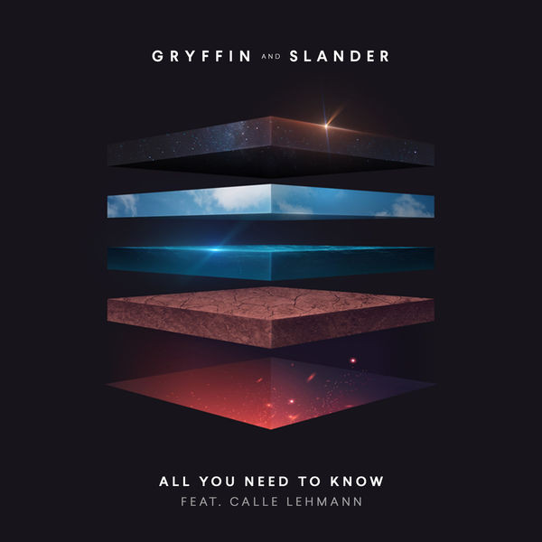
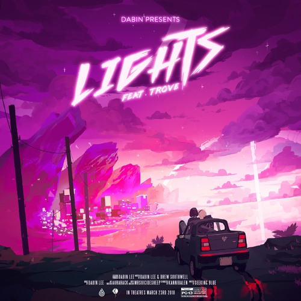
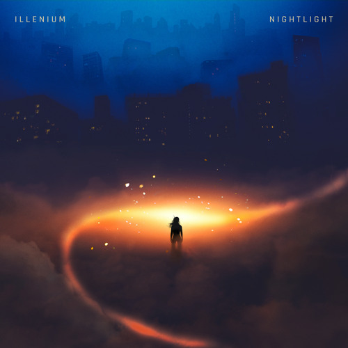
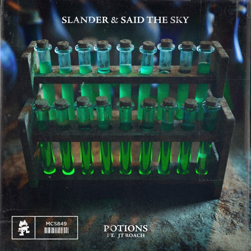
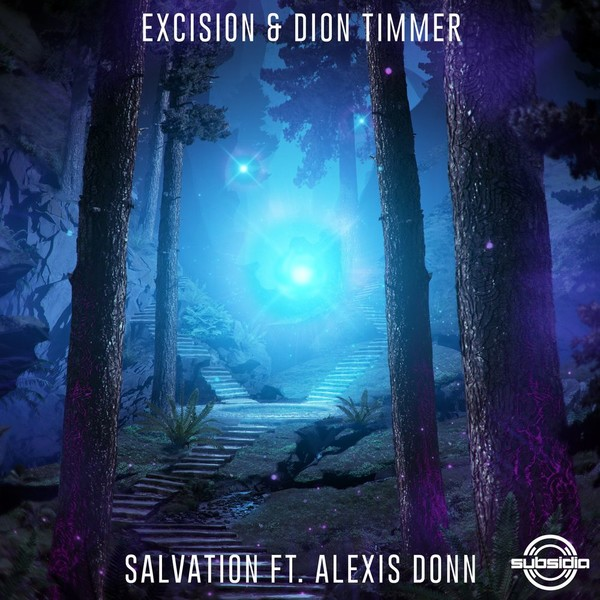
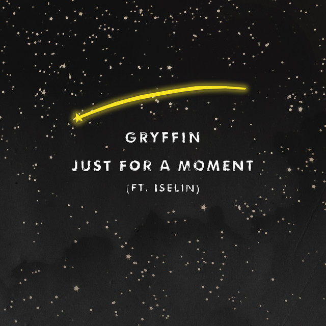

EDM stands for electronic dance music, which typically features a combination of electronic arrangments and vocals. Different artists like playing around with how much they emphasize the two, making their style just so special.
All You Need to Know by Gryffin and Slander
All You Need to Know is by the American DJ and producer Gryffin and American DJ duo Slander, featuring Swedish singer-songwriter Calle Lehmann. This song merges melody, artful basslines, lovely vocals that bring about warm textures and hypnotic drops.
First Time by Slander and Dabin
First Time by Slander and Dabin, features the EDM vocal sensation Dylan Matthew. This song has a soft spot on many EDM lovers out there. It highlights the feelings of falling in love with someone that has changed your world, making you want to quickly find that special someone. This masterpiece of melody and vocals is so pure and soothing to the ears.
Good Things Fall Apart by Illenium

This song is one of Illenium's (American musician, DJ, and record producer) most popular song of all time. This song takes a deep dive into the thoughts and mentality of an individual that has recently broken up. This song mixes in pop notes and a slight tinge of country, making it a fan and non-fan favorite.
Lights by Dabin
Lights by Dabin, an rising Korean musician from Toronto. This is the song that got myself into EDM in the first place, so it has a special place in my heart. The song is instrumental focused, blending accoustic elements with electronic ones making it a dance pop.
Nightlight by Illenium
Nightlight by Illenium features beautiful vocals by Annika Wells. This is one of the few EDM songs that are a great listen at night. This song highlights how nightlights bring a glimmer of brightness when everything else is dark.
Potions by Slander
Potions is a song by American DJ duo Slander and American electronic dance music producer Said the Sky, featuring singer-songwriter JT Roach. The reflective and melodic notes makes any listner sentimental in the moment.
Salvation by Excision
Salvation by Excision is one of the rare songs by the artist that features beautiful vocals. This Canadian producer and DJ is known for his heavy electronic sounds and base. This song is a great gateway to entering Excision's world.
Take You Down by Illenium
Take You Down by Illenium is a piece where the artists describes how his overdose on heroin nearly took his life. This song reaches out to others that are struggling with addiction or those on the road to recovery and to finding peace. Listeners can truly feel the hardship through the melody powering through the strong beats.
Just For a Moment by Gryffin
Just for a Moment by Gryffin is praised for its energy, danceability, and positive energy. The dynamic future bass synth arrangements come together as a vibrant collaborative piece. This song is perfect for a day out in the summer.